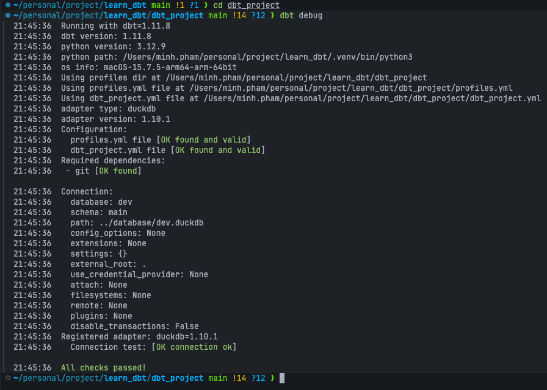

You ran dbt init last exercise and got a project skeleton. The skeleton describes what to build — model paths, project name, defaults. It says nothing about where to build it. That’s what profiles.yml is for.
| File | Describes | Travels with |
|---|---|---|
dbt_project.yml |
The project: name, paths, model defaults, materializations. | The repo — everyone on the team uses the same one. |
profiles.yml |
The connection: which warehouse, which credentials, which schema. | Often the developer’s machine — credentials don’t belong in git. |
By default dbt looks for profiles.yml at ~/.dbt/profiles.yml (your home dir). For this course we override that and keep it inside dbt_project/ so the whole project is self-contained — the verifier sets DBT_PROFILES_DIR=dbt_project/ when it runs dbt commands for you.
In a real team setup the connection config lives outside the repo (env vars, a secrets manager, dbt Cloud). Bundling it inside the project is a learning convenience, not a production pattern.
dbt_project: # ← matches the `profile:` field in dbt_project.yml
target: dev # ← which output to use by default
outputs:
dev:
type: duckdb # ← which adapter (must match an installed dbt-<adapter> package)
path: ../database/dev.duckdb # ← relative to dbt_project/ → <repo-root>/database/dev.duckdb
threads: 4 # ← how many models to build in parallel

The path is relative to wherever you run dbt from (typically dbt_project/), so ../database/dev.duckdb resolves to a single shared database/ directory at the repo root. Keeping the warehouse outside the project means dbt-learn reset can wipe dbt_project/ without nuking your raw data alongside it.
Key things to notice:
profile: field inside dbt_project.yml. dbt init set both to your project name, so as long as you don’t rename anything they line up.outputs is a map. Real teams have dev, ci, prod entries side by side and switch between them with --target ci. We only need dev.account, user, password, warehouse. BigQuery needs project, dataset, a keyfile path. DuckDB just needs a path.dbt debug — the smoke testOnce profiles.yml is in place, dbt debug tells you whether dbt can:
dbt_project.ymlprofiles.ymlSELECT 1)If all five pass you see:
All checks passed!

If any fail, dbt prints the exact step that broke. dbt debug is the first thing you run when something stops working — before dbt run, before reading model code, before anything else.
dbt_project.yml says profile: jaffle_shop but profiles.yml’s top-level key is dbt_project, dbt will say “Could not find profile named ‘jaffle_shop’.” Make them match.type:. — Without it, dbt doesn’t know which adapter to load and the error message is cryptic. Every output needs a type:.profiles.yml in the repo for a real warehouse. — Fine for DuckDB on a learning project. Never do it with credentials. Use env vars ({{ env_var('SNOWFLAKE_PASSWORD') }}) or a secrets manager.Press n to start the exercise.